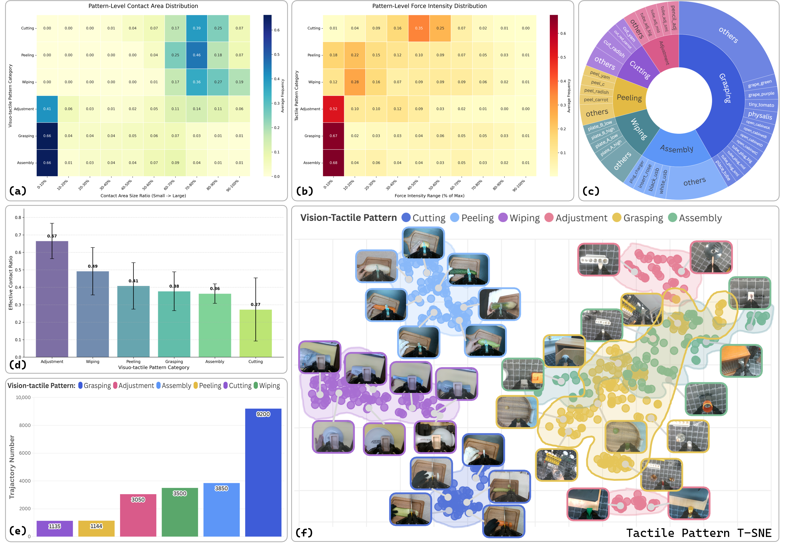

Affiliations


Overview
Dataset Statistics

Dataset Samples
Open-loop Visuo-Tactile Generation
We present both the manipulation videos and the dual-finger tactile signals generated by our visuo-tactile world model, demonstrating a high degree of consistency with the ground truth.
Assembly
Cutting
Peeling
Wiping
Adjustment
Grasping
Real-Robot Execution
We demonstrate the responsiveness and robustness of our slow-fast visuo-tactile manipulation framework across a variety of tasks and under perturbations.
Assembly
Cutting
Peeling
Wiping
Adjustment
Grasping
Case Study and Qualitative Results
We visualize the visual input, predicted tactile signals, future contact states, and vision-tactile fusion weights during closed-loop inference. When the vase is disturbed, the policy re-predicts contact-related signals and adjusts its action accordingly. When tactile prediction degrades, the policy gradually fails to generate reasonable actions.
We further show more real-world examples with predicted contact states and fusion weights. The results show that the policy adaptively balances vision and tactile during execution. Even with an unseen knife, it still predicts future contact states accurately and maintains effective visuo-tactile fusion.